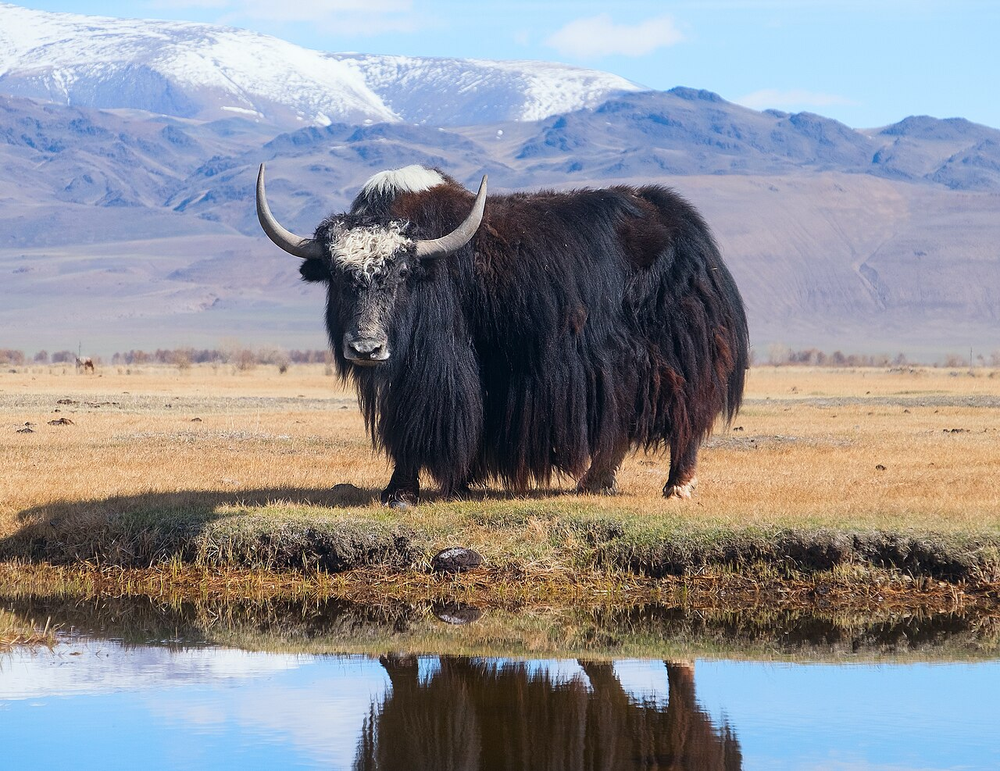

Yak
Long-haired bovines from the Himalayan region.
- Species: Bos grunniens
- Diet: Herbivore
- Size: 5-6 ft tall
- Weight: 600-1,200 lbs
- Life span: 20-25 years
- Habitat: Alpine meadows
- Found: Tibet, Mongolia
- Can be pet: No
Trivia: Yaks are adapted to high altitudes with thick fur and large lungs.